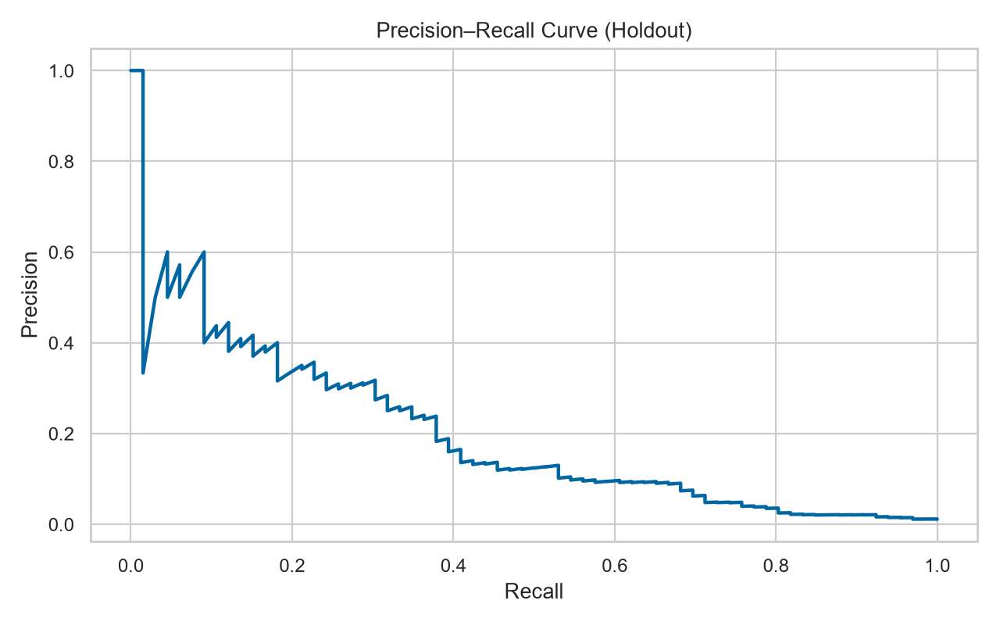
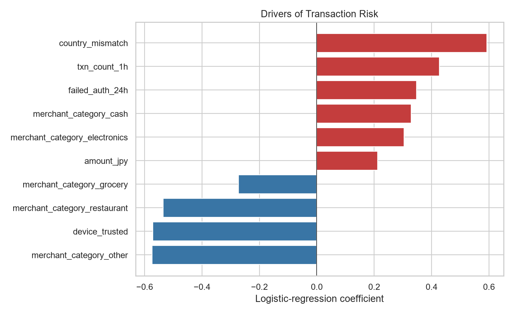

取引リスク・異常検知
30,000件の匿名化想定取引を対象に、検知精度だけでなく誤検知コストを含めて運用閾値を設計した。
業務判断
- FN 50,000円、レビュー500円という仮定で総期待コストが最小の閾値を採用。
- 推奨閾値でPrecision 8.6%、Recall 68.2%、アラート523件。
- 実運用では担当者処理能力、損失額、顧客体験に合わせて閾値を再調整する。


データは機密情報を使用せず、業務仮説に基づき生成した合成データ。結果は実在企業を表さない。